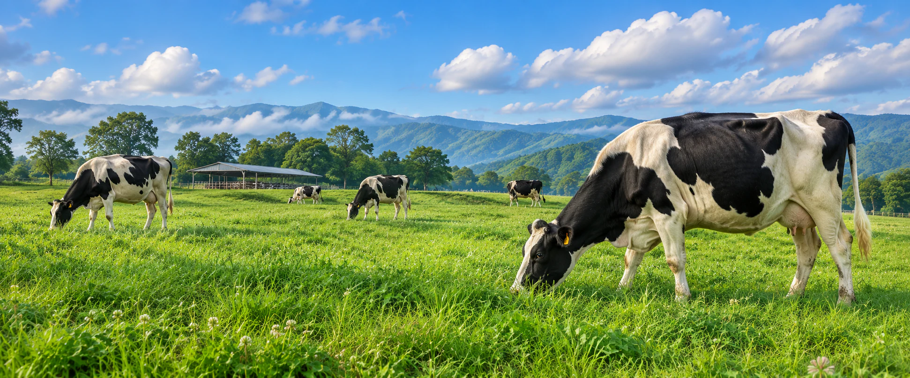
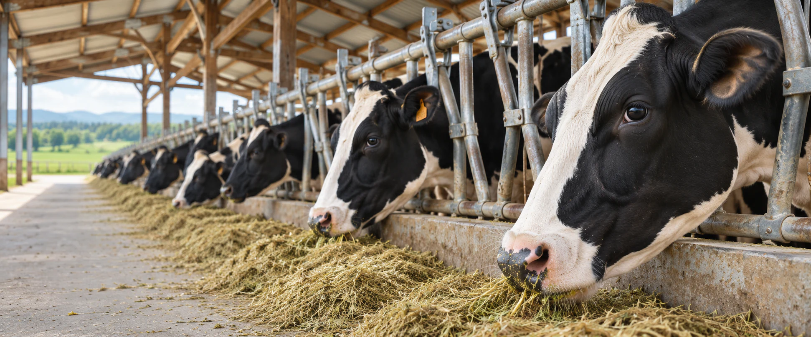
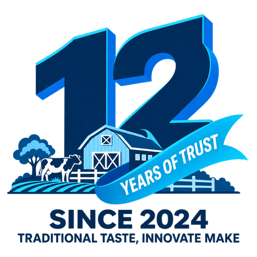
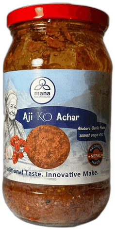
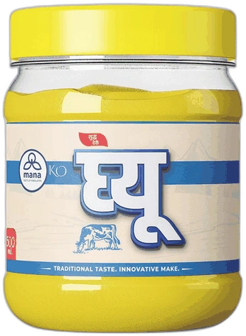
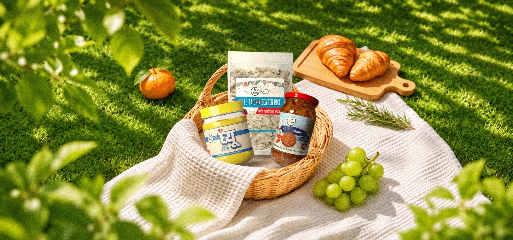
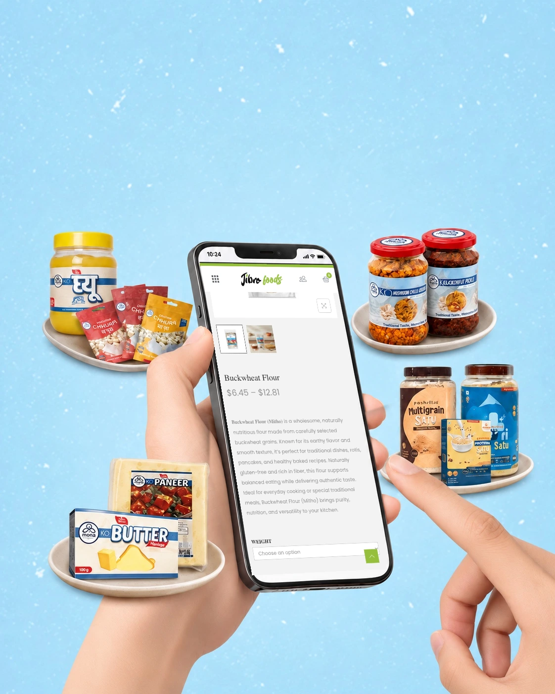

From our herd and Nepal’s harvest
We are
Manaram Farm.


Manaram Farm promotes local resources to create high-quality food for everyday life. Through our brands, we make FMCG products from the finest raw materials, using traditional and innovative techniques, so they are as delicious as they are healthy.
Product categories
View all 12 categoriesHide catalog
Milk & dairy
Milk from our herd goes into Mana Ko paneer, dahi (yogurt) and ghee. The dairy range also includes Chhurra Chhurpi, a firm, dried cow’s milk cheese.
- Chhurra Chhurpi Josh (100 g)
- Chhurra Chhurpi Meetho (100 g)
- Chhurra Chhurpi Peanut Butter (100 g)
- Chhurra Chhurpi The Original (100 g)
- Mana Ko Butter
- Mana Ko Cream
- Mana Ko Dahi
- Mana Ko Ghee (500 ml)
- Mana Ko Milk
- Mana Ko Nauni
- Mana Ko Paneer
Mana Ko achar
We make Mana Ko achar with ingredients such as lapsi (hog plum), garlic and jackfruit. The selection also includes whole dalle chilies and bamboo shoots preserved in brine.
- Dalle in Brine
- Mana Ko Akabare Garlic Achar
- Mana Ko Gundruk Pickle (200 g)
- Mana Ko Jackfruit Pickle (380 g)
- Mana Ko Lapsi Achar (380 g)
- Mana Ko Mango Achar
- Mana Ko Mix Achar
- Mana Ko Mushroom Choila Achar (300 g)
- Mana Ko Timur Chop Achar (250 g)
- Tama in Brine
Sukuti & dried fish
Sahi Sukuti comes in buffalo and chicken varieties, including timur and akabare garlic seasonings. Mana Ko Perungo is our dried fish.
- Mana Ko Perungo (200 g)
- Sahi Sukuti Akabare Garlic (100 g)
- Sahi Sukuti Chicken - Akabare Garlic
- Sahi Sukuti Chicken - Original
- Sahi Sukuti Chicken - Sandheko
- Sahi Sukuti Chicken - Shitaan
- Sahi Sukuti Chicken - Timure
- Sahi Sukuti Momo (100 g)
- Sahi Sukuti Sadheko (100 g)
- Sahi Sukuti The Original (100 g)
- Sahi Sukuti Tikka Masala (100 g)
- Sahi Sukuti Timur (100 g)
Chiura & granola
Chiura is rice flattened into flakes. We offer white and red Taichin chiura, as well as a granola made with beaten rice.
- Chiura Granola
- Chiura Taichin (Rato)
- Chiura Taichin (Seto)
Poshilo Sattu
Roasted grains and pulses form the base of Poshilo sattu. Blends include multigrain, fruit and nut, and savory chickpea with jaljeera spices.
- Chana Masala Satu
- Kids Lito Satu
- Mango Madness Satu
- Moms Delight Satu
- Multigrain Satu
- Nutri + Satu
- Nutty Delight Satu
- Protein + Satu
Grains & pulses
- Bhuteko Kalo Bhatmas
- Bhuteko Khairo Bhatmas
- Bhuteko Seto Bhatmas
- Jetho Budho Rice
- Kacho Kalo Bhatmas
- Kacho Khairo Bhatmas
- Kacho Seto Bhatmas
- Kwati Beans
Flours
- Buckwheat Flour
- Finger Millet Flour
- Taichin Rice Flour
- Yomari Flour
Masala & spices
- Fish Masala
- Nepali Chatpate Masala
- Nepali Chicken Masala
- Nepali Chowmein Masala
- Nepali Hog Plum Masala
- Nepali Momo Masala
- Nepali Mutton Masala
- Nepali Rice Pudding Masala
- Nepali Sekuwa Masala
- Nepali Tea Masala
- Nepali Timur Masala
- Yomari Stuffing Masala
Sugar, salt & seeds
- Akabare Khursani Powder
- Alaichi
- Amla Powder
- Black Mustard Seed
- Himalayan Black Salt Powder
- Jimbu
- Kalo Til
- Khairo Til
- Lapsi Powder
- Misri
- Moringa Powder
- Sankhuwa Shakhar
Dried & fermented
- Dried Akabare Khursani
- Maas and Pidalu Maseura
- Rayo Gundruk
- Tori Gundruk
Titaura
- Dried Amla Candy
- Hot & Sour Hog Plum Candy
- Hot Plum Stick Candy
- Jujube Candy
- Non Spicy Hog Plum Candy
- Spicy Hog Plum Candy
- Sweet Hog Plum Candy
- Sweet Hog Plum Lapsi Pop Candy
- Tamarind Spicy Candy
Tea & coffee
- CTC Tea
- Mana Ko Coffee Beans
- Mana Ko Ground Coffee Hilly Premium
- Mana Ko Ground Coffee Mountain Premium
Local resources. Modern methods. One farm you can trust.
We grow and source across Nepal to support our community, then finish each batch with traditional craft and contemporary standards so flavor and freshness hold together.




Find product names and varieties across all 12 categories.
Explore the categories

Where to shop
Find Manaram Farm foods at Mana Ko Mart in Nepal and Jibro Mart in the United States.